Contained inside a single plant seed is all the nutrition it needs to grow into a healthy seedling. And that’s exactly why these tiny guys pack such a wallop of nutrients. You can certainly benefit from eating raw seeds and nuts, but soaking and sprouting seeds helps them begin to do what they were made to do: grow. And that helps unlock some of those powerful compounds. It’s a great - and easy - way to release all that nutrition into a tangy, tasty treat.
When a seed is in contact with moisture, it begins to germinate. During this process, several key nutrients are increased or made more accessible to us. Some of these compounds include vitamins A, B-complex and C; minerals such as iron, calcium and potassium; protein; fiber; essential fatty acids; and various beneficial enzymes, antioxidants and phytochemicals.
In culinary terms, sprouts are typically enjoyed as a flavorful addition to other foods, rather than eaten on their own. They can be enjoyed raw or cooked, and fall into three broad categories: salad-, grain- and bean-type sprouts. Eating a variety of different sprouts is the best way to take advantage of their complete buffet of flavors and health benefits. Here are a few dishes that will be improved by the addition of your fresh, homemade sprouts:
Though some (alfalfa, mung bean) are more common than others, all of the following plants have great seeds for sprouting - experiment away!
Since 1990, more than a dozen outbreaks of food poisoning have been traced to commercial sprouts, so some people have harbored suspicions about their safety. Should we worry, even if we grow the seeds and sprouts ourselves?
Probably not. Because sprouts are grown at room temperature in moist conditions, they can foster bacterial growth. But these days, most seed sold for sprouting purposes has been tested for bacterial traces. As long as you start with uncontaminated seeds, use clean jars and water, and refrigerate sprouts when they attain perfection, the risk of growing a secret crop of Salmonella is next to nothing.
To prevent possible bacterial contamination when growing plants for seeds you plan to sprout, never use fresh manure near the plants, and store your seeds in airtight containers secure from dirt and mice.
In order to sprout, seeds need only be kept moist and in contact with air. There are several convenient sprouting kits available (including great automatic sprouters), but the following methods fulfill the simple requirements. With any method, first rinse your seeds a couple times, then soak them overnight in a clean jar of water.
Hemp bag method: Dump the soaked seeds into the bag, wet it thoroughly, then hang the bag on a hook to drain.
Jar method: Dump the soaked seeds in the jar. Cover jar with fine-mesh cheesecloth or window screen. Secure with a rubber band around the lip. Turn the jar over into a container with a wider mouth to catch dripping water.
For the freshest and best-tasting sprouts, rinse and drain the seeds (and then the sprouts) at least a few times a day. You can begin to harvest your fresh sprouts as soon as the tails emerge, which is when they are sweetest. Or let them grow an inch or two to determine when you like them best. Store in the refrigerator; they’ll stay yummy for a few days.
For a complete list of sprouting seeds and when to harvest them, plus growing tips and even more tasty recipes, search our website. To learn even more, check out Steve Meyerowitz’s book, Sprouts: The Miracle Food.
In this dish, the delicate texture and flavor of sea scallops complement the mild-flavored and lightly wilted tender sprouted peas (shoots).
2 tbsp extra-virgin olive oil, halved
4 tbsp unsalted butter, halved
1/2 cup onion, chopped
2 cloves garlic, finely chopped
1/2 pound fresh sea scallops
1/2 cup sweet white wine or sherry
6 ounces pea shoots
Sea salt and freshly ground pepper, to taste
Heat half of the olive oil and butter in a large skillet. Add onion and garlic and sauté until onions begin to brown, stirring often. Add the scallops and sauté until lightly browned. Add wine or sherry and quickly bring to boil; then immediately turn off the heat and remove contents from the hot pan.
Heat the remaining oil and butter in a medium skillet. Toss in pea shoots and cook just until wilted, flipping gently. Divide pea shoots onto two deep plates. Place half the scallops on each pile of pea shoots, then spoon sauce over each. Serves 2.
- Adapted from www.jonathansorganic.com
Everybody loves mashed potatoes, but these get an extra-special kick from fresh sprouts and roasted garlic. Any kind of sprouts are a nice addition to mashed potatoes, but try onion sprouts - they’re especially tasty.
1 head garlic
1 tsp olive oil
6 to 8 medium potatoes, scrubbed and quartered (peeled if you prefer)
1/3 cup milk or cream
1/4 cup unsalted butter
2 cups fresh sprouts, chopped
Sea salt and freshly ground pepper, to taste
First, roast the garlic. Peel away the outer layers of paper that fall away easily, and lay the head of garlic on its side to chop about a quarter inch off the top. You want to see at least a sliver of the naked skin of each clove. Then set the head of garlic on a piece of aluminum foil and drizzle oil over the top. Pinch the foil around the garlic head, and bake the little package at 400 degrees Fahrenheit for about 15 minutes, or until your garlic is soft, squishy and golden brown. Set aside.
Boil potatoes until fork-tender, about 10 to 15 minutes. Take care not to overcook! Drain, then mash the potatoes with the butter, milk and garlic cloves. (The garlic cloves should release from their “skins” with a little squeeze.) Stir in the chopped sprouts. Garnish with a few sprouts and whole roasted garlic cloves. Serves 8 as a side.
A pita or sandwich can be made with whatever is on hand and in season. Like most sandwiches, there are three main building blocks:
The bread: Warm a pita, bagel or bread slices in a toaster or toaster oven.
The condiment: Coat the bread or the inside of the pita with your favorite creamy spread, such as fresh goat cheese (shown here), cream cheese, mashed avocado, crème fraiche, aioli, or a mixture of tahini and miso.
The stuffing: Fill the pita with roasted and pickled vegetables or egg/tofu/tuna/chicken salad, plus plenty of fresh sprouts. (Here we used roasted pumpkin and pepper slices, plus pickled veggies.)
1 cup sprouted beans, peas or lentils (or a mixture)
2 tbsp tahini
2 tbsp lemon juice
1 tbsp extra-virgin olive oil
2 cloves garlic, diced
1 tsp ground cumin
1 tsp ground cayenne pepper
Sea salt and freshly ground pepper, to taste
Boil bean sprouts for 10 minutes, or until soft, then drain. Mix with remaining ingredients by mashing with a fork. (For a smoother consistency, use a food processor.) Serve with seasonal vegetables, chips, crackers or toasted pita bread. Serves 6 as an appetizer.
Any winter squash will work nicely in this preparation. In the summer, stuff a tomato or eggplant with the tofu salad instead, and substitute peak-season veggies in the stuffing. Both the squash and the stuffing can be prepared in advance, and can be enjoyed separately, too.
FOR THE STUFFING:
1 pound firm tofu, cut into small pieces
2 tbsp extra-virgin olive oil
2 tbsp rice wine vinegar
2 tsp tamari soy sauce
1 tbsp garlic, finely diced
1/2 tsp ground cayenne pepper (or more, to taste)
1 tsp paprika
Freshly ground pepper, to taste
3 scallions (white and green parts), chopped
1 medium carrot, finely diced
1/2 rib celery, finely diced
1/4 sweet onion, diced
1 cup fresh salad-type sprouts (alfalfa, clover, broccoli, etc.), chopped
FOR THE SQUASH:
2 acorn squash, halved and seeded
2 tsp olive oil
Press tofu gently between paper towels to expel some of the water. Whisk together oil, vinegar, tamari and spices. Stir the marinade, diced vegetables and sprouts into the tofu. Set aside so it can marinate while you bake the squash.
Preheat oven to 350 degrees Fahrenheit. Rub each squash half with oil. Place them in a roasting pan, cut-sides down. Fill the pan with 1/2 inch of water. Bake squash for 30 to 40 minutes, or until tender. Set aside to cool.
Fill each squash half with a mound of tofu salad. Top with a sprinkling of fresh sprouts. Serves 4.
Sauteed mung beans and seaweed salad are both classic Asian dishes, but you don’t usually see them prepared together in this way. This preparation provides a nice contrast of hot and cold, plus a blend of sweet, sour, salty and spicy flavors.
2 ounces dried seaweed (wakame, arame, kombu, or a mixture of varieties)
2 tbsp sesame seeds
3 tbsp rice vinegar
3 tbsp tamari soy sauce
3 tbsp sesame oil
1 tsp raw sugar or brown rice syrup
1 tsp fresh ginger root, peeled and grated
1 tbsp fresh garlic, peeled and diced
1 to 2 tsp hot dried red pepper flakes
1 cup mung bean sprouts
2 tsp unsalted butter
Soak the seaweed in warm water for about 5 minutes. When soft, drain the seaweed, squeezing out excess water. If seaweed was purchased whole, cut it into strips. Meanwhile, toast the sesame seeds for a few minutes in a dry pan over medium heat, until fragrant. In a separate bowl, whisk together the vinegar, soy sauce, oil, sugar, ginger, garlic and pepper. Toss this mixture with the seaweed and sesame seeds, and allow to marinate in the refrigerator for at least an hour before serving. The seaweed salad can be prepared up to 2 days in advance. Just before serving the salad, sauté the bean sprouts in butter for a just a few minutes. The sprouts should still be crispy and juicy. Stir into cold seaweed salad, and serve immediately. Serves 6.
|
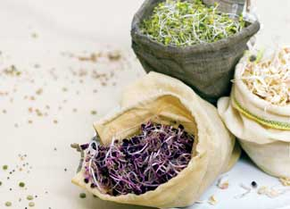 EMILY HELLER Sprouts can be grown easily in hemp or flax bags. And they come in a wider variety than you may realize. Try multi-colored purple radish sprouts or crisp sprouted peas. |
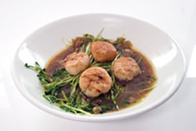 EMILY HELLER Scallops on Wilted Pea Shoots. In this dish, the delicate texture and flavor of sea scallops complement the mild-flavored and lightly wilted tender sprouted pea shoots. |
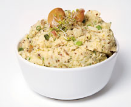 EMILY HELLER Spiked Mashed Potatoes. Everybody loves mashed potatoes, but these get an extra-special kick from fresh sprouts and roasted garlic. Any kind of sprouts are a nice addition to mashed potatoes, but try onion sprouts. These are tastier and healthier than regular mashed potatoes. |
|
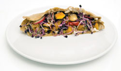 EMILY HELLER Sprout Sandwich. A pita or sandwich can be made with whatever is on hand and in season. Roasted pumpkin and peppers with fresh sprouts make a great winter sandwich. |
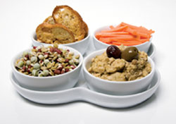 EMILY HELLER Sprout Hummus. Unlike some hummus recipes, you can really taste the yummy beans. |
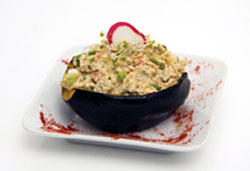 EMILY HELLER This stackable seed sprouter is one easy method for sprouting seeds at home. |
|
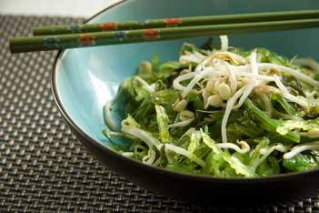 EMILY HELLER Sautéed Mung Bean and Fresh Seaweed Salad |
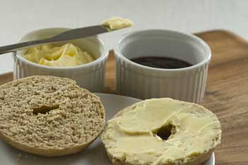 EMILY HELLER Sprouted grains can be used in most kinds of dough for baked goods. |
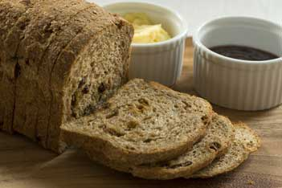 EMILY HELLER Sprouted grain bread |
|
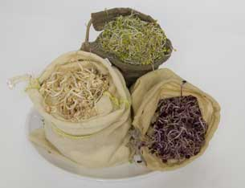 EMILY HELLER You can sprout seeds inside cloth bags easily. Most sprouting supply companies sell hemp bags, and Sproutman also offers a nice flax bag. |
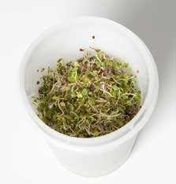 EMILY HELLER The EasySprout is another simple method for sprouting seeds at home. |
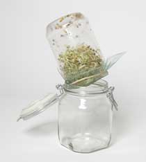 EMILY HELLER The simple sprouting setup can probably be cobbled together from things you already have in your kitchen. |
|
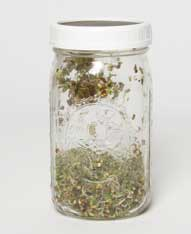 EMILY HELLER This product from SproutPeople resembles the DIY sprouter setup, but comes with an easy-to-use stainless steel mesh-screen screw cap. |
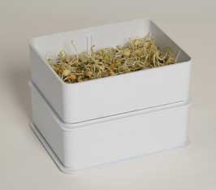 EMILY HELLER The SproutMaster features neatly stackable trays that are easy to use and clean, and come in small and large sizes. |
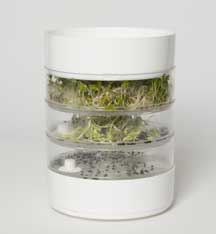 EMILY HELLER |
|
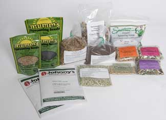 EMILY HELLER Many different kinds of seeds can be sprouted easily at home. |
|
|